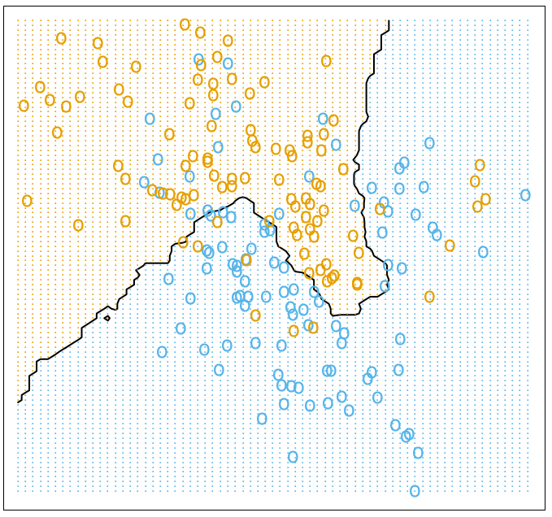
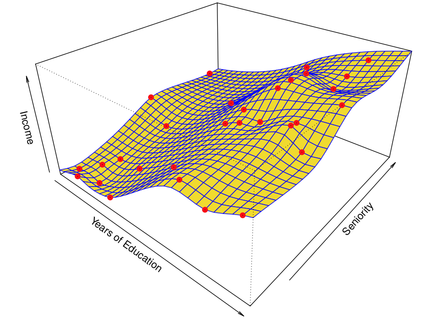

Skip to main content
Contents
Search Book
Search Results:
No results.
Embed Read aloud Readability settings Prev Up Next \(\newcommand{\N}{\mathbb N}
\newcommand{\Z}{\mathbb Z}
\newcommand{\Q}{\mathbb Q}
\newcommand{\R}{\mathbb R}
\newcommand{\lt}{<}
\newcommand{\gt}{>}
\newcommand{\amp}{&}
\definecolor{fillinmathshade}{gray}{0.9}
\newcommand{\fillinmath}[1]{\mathchoice{\colorbox{fillinmathshade}{$\displaystyle \phantom{\,#1\,}$}}{\colorbox{fillinmathshade}{$\textstyle \phantom{\,#1\,}$}}{\colorbox{fillinmathshade}{$\scriptstyle \phantom{\,#1\,}$}}{\colorbox{fillinmathshade}{$\scriptscriptstyle\phantom{\,#1\,}$}}}
\)
Section Exam 1 material
Handout Day 01
What is statistical learning?
Subfield of statistics
Emphasizes models and their interpretability, precision, and uncertainty
List 8. Statistical Learning
Has a greater emphasis on large scale applications and prediction accuracy.
List 9. Machine Learning
Why should you care?
Data is everywhere, getting more complicated and useful. Learning how to analyze data is critical.
Web data, e-commerce (Amazon, JD, Alibaba)
Car sales (Tesla, Ford, and GM)
Sports team (MSU, Lions, etc)
even fancier data in biomedicine
Learning tools as black boxes?
Need to understand the machinery enough to
know how to interpret output of the tool
Don’t need to rebuild the entire box from scratch
Example 10 . Spam versus non-spam email.
Classify incoming emails as spam versus non-spam based on the average percentage of certain words or characters.
Answer .
One choice is to select the words and characters showing the largest difference between spam and email. For example, one classifier can be if (%george ;leq 0.6) & (%you > 1.5) then spam. Another option is if (0.2.%you - 0.3.%george > 0) then spam.
Supervised learning
Outcome measurement
\(Y\) (also called dependent variable, response, target, label).
Vector of
\(p\) predictor measurements
\(X\) (also called inputs, regressors, covariates, features, independent variables).
In the regression problem,
\(Y\) is quantitative (e.g price, blood pressure).
In the classification problem,
\(Y\) takes values in a set of distinct categories (survived/died, cancer class of tissue sample, types of language).
Unsupervised learning
No outcome variable, just a set of predictors (features) measured on a set of samples.
Objective is fuzzier: often explore the intrinsic relation between samples (e.g.,clustering) or features (e.g. dimensionality reduction)
Difficult to know how well you are are doing
Different from supervised learning but can be useful as a pre-processing step for supervised learning.
Checkpoint 11 . Generative AI discussion.
(a) Get in a group of about 4.
(b) In your group, brainstorm cases where someone might use generative AI in the context of our class.
(c) Once you have added a few, start adding arguments for or against whether we should allow the use of that context in class.
Handout Day 02
Objectives: Covered in this class
Reduceable vs irreduceable error.
Classification vs regression
Supervised vs Unsupervised learning
Please note: no jupyter notebook for today’s class, slides only
Figure 12. Sales of a product in 200 markets, along with amount spent on three different types of advertising
Sales of a product in 200 markets, along with amount spent on three different types of advertising. Data available at
advertising dataset.
Goal: Predict Sales based on amount spent in each type of advertising
Checkpoint 13 . Input Variables.
List the
input variables.
Hint .
Those are used to predict the output.
Checkpoint 14 . Output Variables.
List the
output variables.
Hint .
Those are what we measure or estimate.
Notation and Big Assumption.
Input variables:
\(X_1, X_2, \cdots, X_p\)
\begin{equation*}
Y = f(X) + \epsilon
\end{equation*}
Prediction vs Inference. Prediction.
Given a value
\(X\text{,}\) try to provide an estimate for
\(f(X)\text{.}\)
Build a model
\begin{equation*}
\hat Y = \hat f (X)
\end{equation*}
Example: If we spend $250 on TV advertising, what do we predict we will we make in sales?
The blue solid line is
\(f\text{.}\) The green dashed line is
\(\hat f\text{.}\) What is the predicted sales for the first three data points using the green dashed line
\(\hat f\) shown in the graph? Note all values are approximate.
Checkpoint 15 .
What is
\(\hat f(230.1)\text{?}\)
Checkpoint 16 .
What is
\(\hat f(44.5)\text{?}\)
Checkpoint 17 .
What is
\(\hat f(17.2)\text{?}\)
Using the dashed green line as the predicted model
\(\hat{f}\text{,}\) how can we quantify the error in each of the three predictions? This is what we will learn next.
Reducible vs irreducible error.
\begin{equation*}
Y-\hat{Y}
\end{equation*}
More on error.
Given estimate
\(\hat{f}\) (fixed)
Set of predictors
\(X\) (fixed)
Prediction
\(\hat{Y} = \hat{f}(X)\)
\begin{equation*}
E(Y-\hat Y)^2 = E[f(X) + \epsilon -\hat f(X)]^2 = [f(X) - \hat f (X)]^2 + Var(\epsilon)
\end{equation*}
Inference.
Want
\(f\text{,}\) but not for prediction (or possibly combined with prediction)
Which predictors are associated with the response?
What is the relationship between the response and each predictor?
Can the relationship between
\(Y\) and each predictor be adequately summarized using a linear equation? Is it more complicated?
Checkpoint 18 .
Predict effectiveness of vaccine
Checkpoint 19 .
Determine the address written on the image of an envelope.
Checkpoint 20 .
Identify risk factors for getting long covid.
Checkpoint 21 .
Transcribe an audio file of a person talking.
Checkpoint 22 .
.
\(n\) data points observed
\(x_{ij}\) is the \(j\) th predictor for observation \(i\)
\(y_i\) is the response variable for the \(i\) th observation
\(\displaystyle \{(x_1,y_1), (x_2,y_2), \dots, (x_n,y_n)\}\)
\(\displaystyle x_i = (x_{i1},x_{i2},\dots,x_{ip})^T\)
Parametric methods.
Step1: Select a model
EXample:
\begin{equation*}
f(X) = \beta_0 + \beta_1X_1 + \beta_2 X_2 + \cdots + \beta_pX_p
\end{equation*}
Step 2: Train the model
Example: Find $ \(B'_i\) s so that
\begin{equation*}
Y \approx \beta_0 + \beta_1X_1 + \beta_2 X_2 + \cdots + \beta_pX_p
\end{equation*}
Data points for income in units of 1000 versus years of education and seniority along with a planar surface fit to data
How do you decide on the coefficients? Change the values of the coefficients and observe how the fit changes.
Example Non-parametric method: Nearest Neighbors.
\begin{align*}
N_k(x) \amp= \text{Set of $k$ nearest neighbors of $x$} \\
\hat f(x) \amp = \frac{1}{k} \sum_{x_i \in N_k(x) } y_i
\end{align*}

A picture of data with two classes separated by a non-linear boundary obtained using nearest neighbors with
\(k=15\text{.}\)
Table 23. Parametric methods: Pros and ConsOverfitting.
Data points for income in units of 1000 versus years of education and seniority along with a non-planar surface fit to data

Data points for income in units of 1000 versus years of education and seniority along with a more flexible non-planar surface fit to data
Prediction Accuracy vs Model Interpretability.
A figure that plots common methods for machine learning with low and high levels for interpretability on the y-axis versus flexibility on the x-axis
Supervised and unsupervised learning:.
Supervised learning : Training data has response variable
\(y\) for every input
\(x\)
Unsupervised learning : Training data does not have response variable
\(y\) for every input
\(x\)
Regression vs Classification.
Quantitative
Qualitative or Categorical
TL;DR.
Reducible vs irreducible error
Classification vs regression
Supervised vs Unsupervised learning